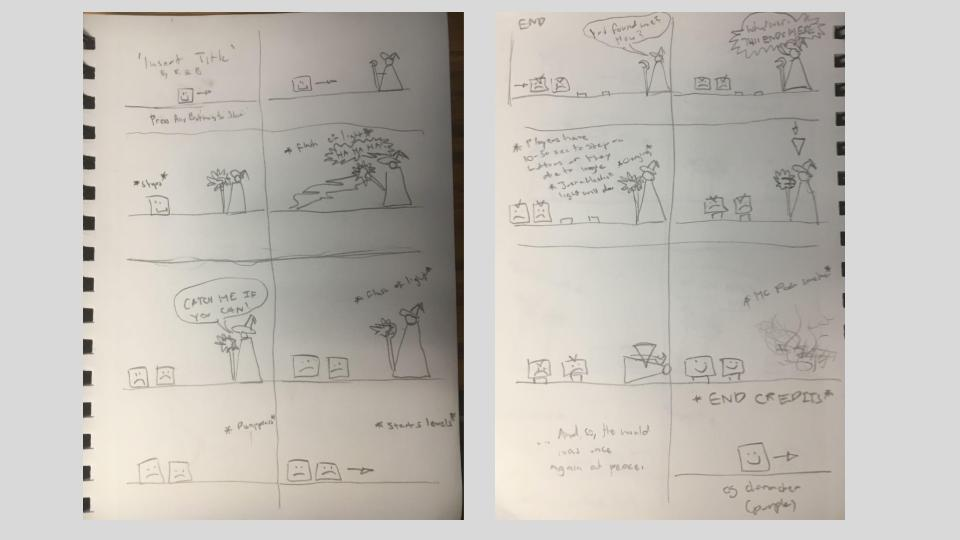
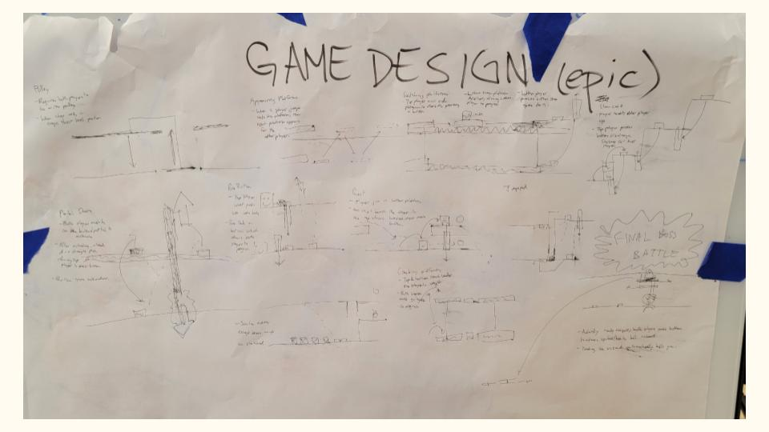
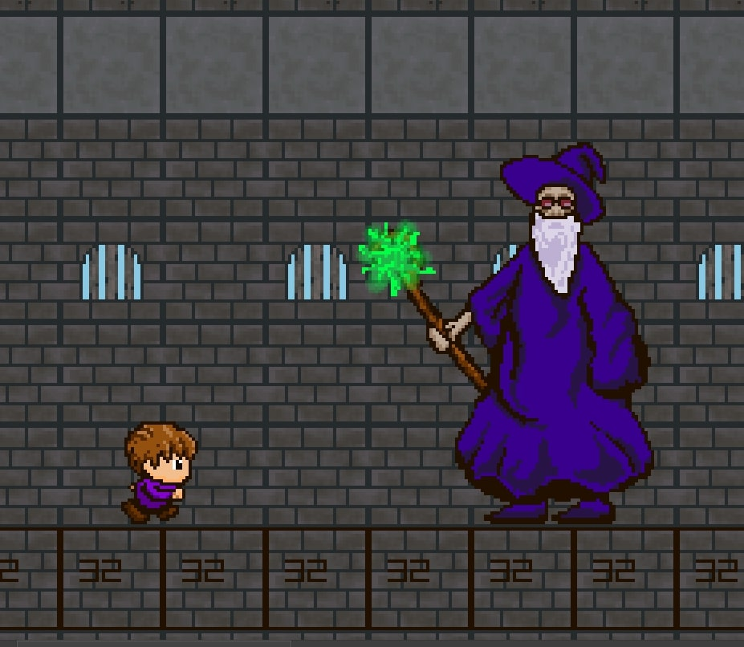
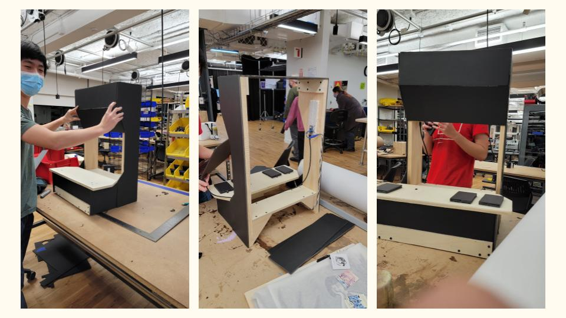
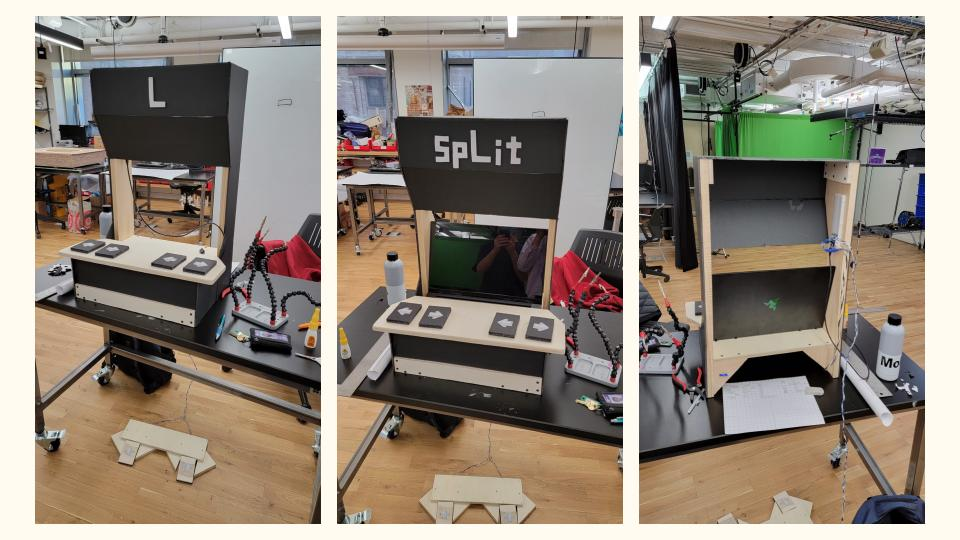
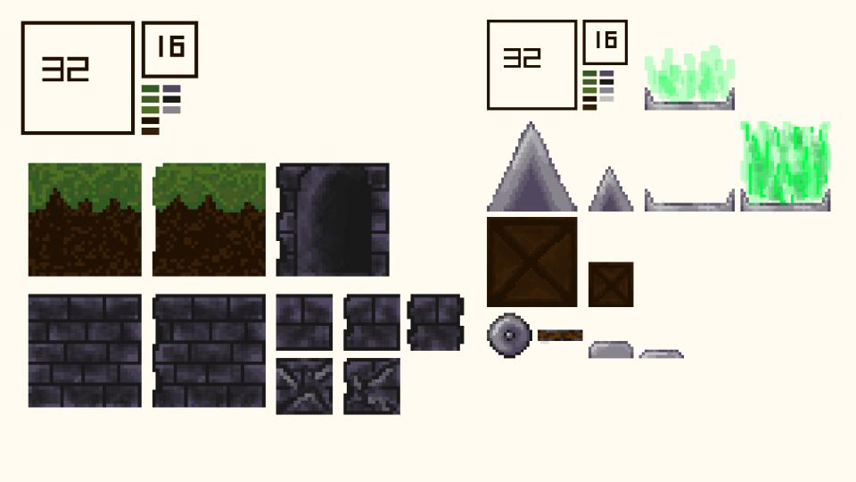
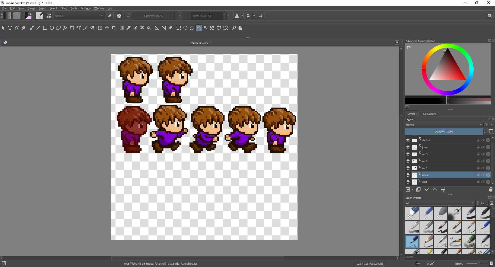
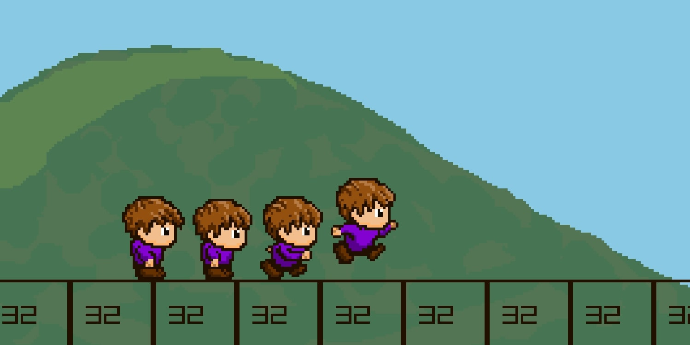
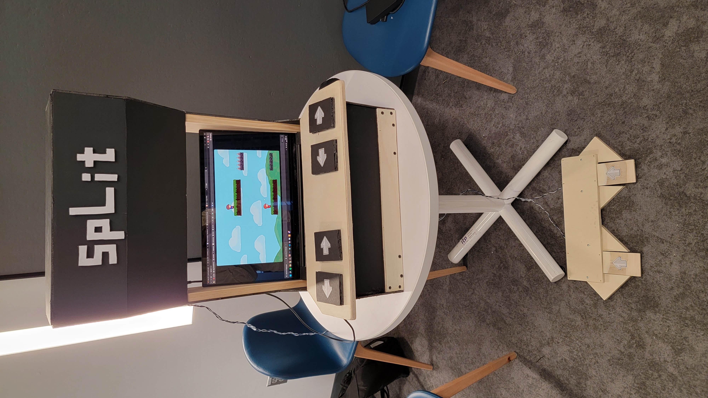

An arcade platformer minigame by Robert Qu and Brandon Chung
SpLit is a collaborative project I worked on starting in late November to mid December 2021. The concept and final product was designed and created with a partner. The game was inspired by the importance of teamwork, hence the game being multiplayer and requiring its two players to collaborate in order to pass each level.
The Concept and Design

Original Storyboard

Level Design

Concept Art
Our original goal was to make an interactive experience that was not only expressed through a digital interface, but also through a physcial booth and player to player communication. Thus, the storyboard and levels were designed to require precise coordination between both players. The art, controls, and overall immersion was meant to be reminiscent of classic platformers.


Construction of the booth and interfaces
The booth itself was a downsized immitation of an arcade machine, with two sets of controls. Each set of controls had a left and right button, as well as a jump paddle. Button inputs were connected to the computer through an arduino. The booth was designed to fit a laptop, which ran the game as well as being the display.
The Artwork

Environment and Prop Textures

Character Design

Simple Movement Test
While my partner developed the engine, I focused on the design and artwork of the game. The art style and sound design emphasizes a retro atmosphere, and the characters were given a set of simple animations that made the game feel more immersive and refined. The textures were made under sizing templates that allowed for easy assembly and better visual consistency in game.
Testing and Final Product
Early Test

Final Appearance and Setup
After putting together the physical build, wiring the controls, and integrating the artwork into the game, we finally had a working product, albiet not entirely refined. However, we were able to solve all the major issues such as poor interaction through redesigns of the physical buttons and booth. The final presentation of our project was unfortunately not recorded, but the game is still playable without the setup and available online.